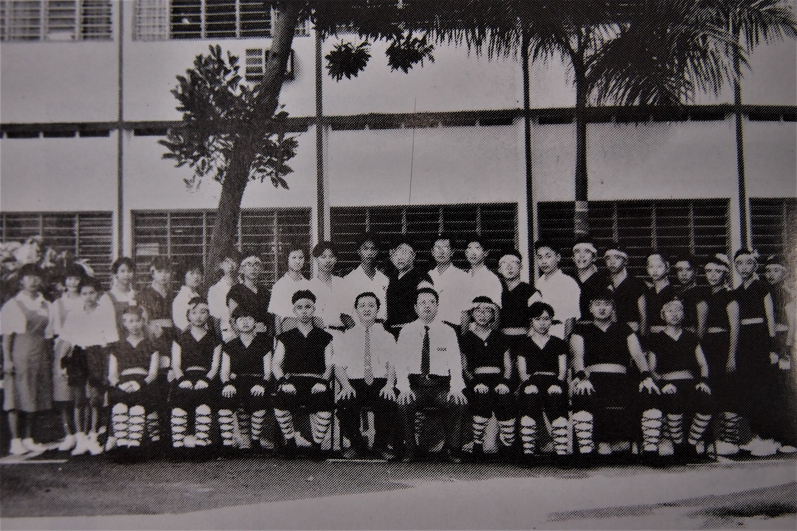
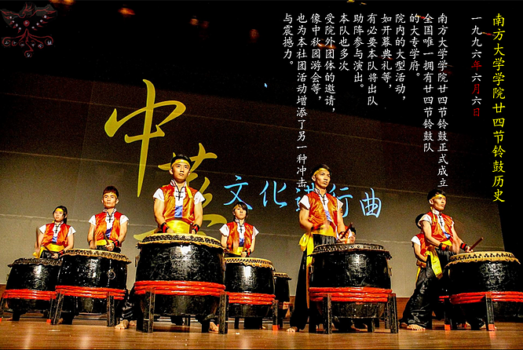
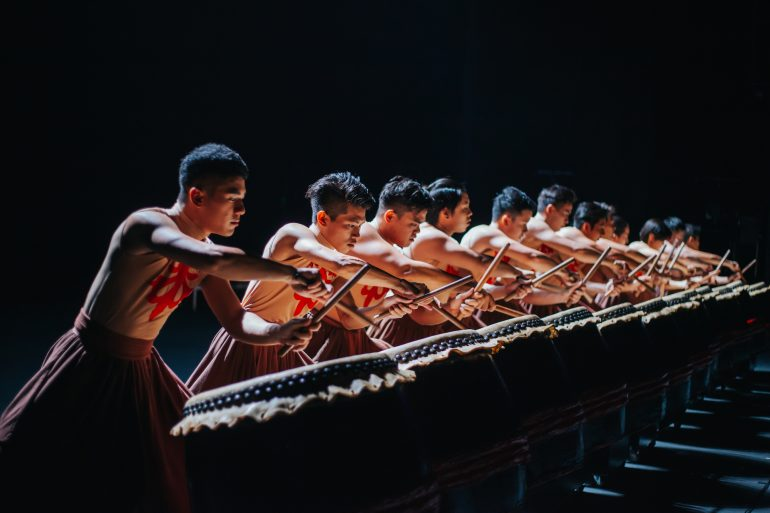
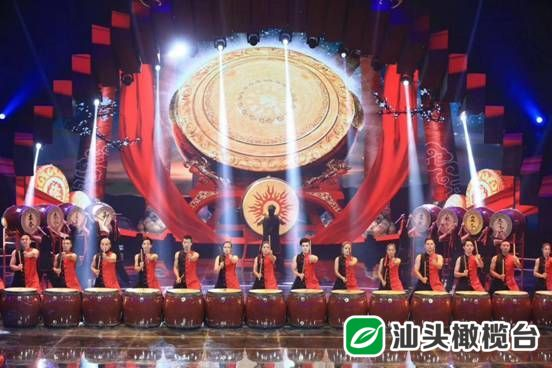
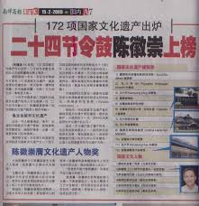
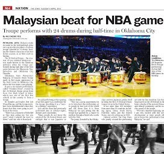
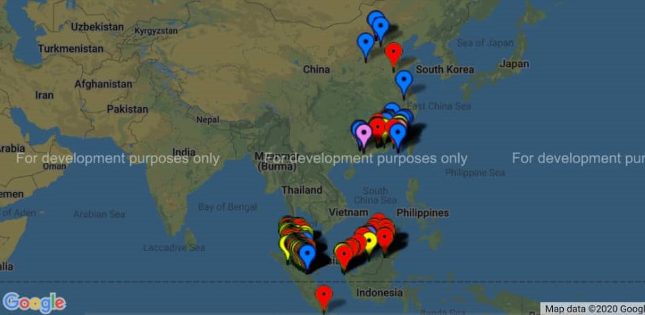
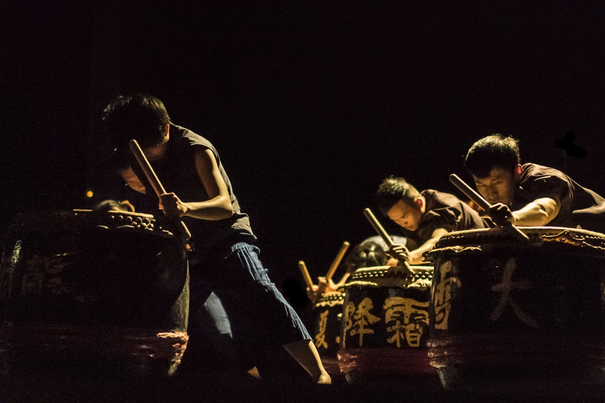
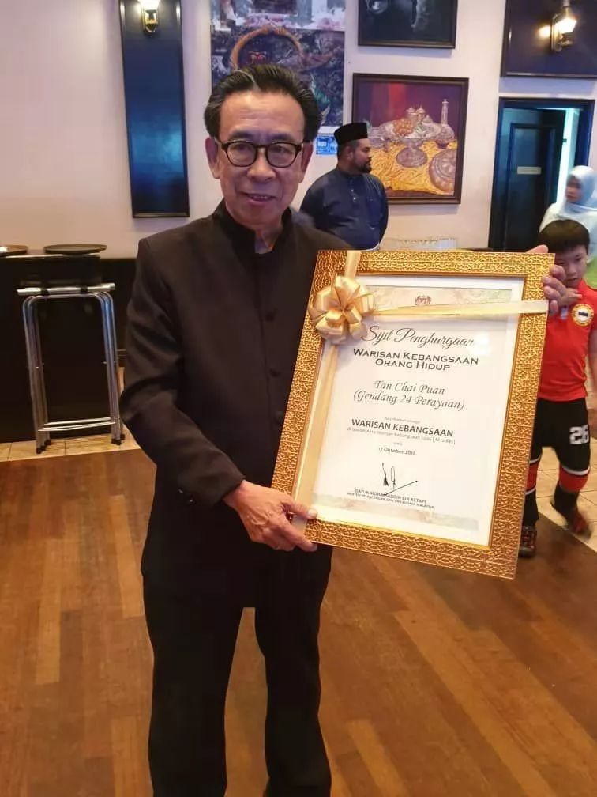

| 1988 |
The first 24 Festive Drums Team established in Foon Yew High School Johor Bahru. They are under the school's concert band until the year 1996, they become an indipendence society. |
 |
| 1990 |
With the efforts of the two founders, the second 24 Festive Drums Team was established in Chong Hua HighSchool Seremban since 1990 September 9th. |
 |
| 1996 |
The very first University drums teams was established in Southern University College when 6th June 1996. SUC 24 FD still being active until now. |
 |
| 1997 |
Bernard Goh, used to be a 24 Festive Drum's Drummer, created the first professional drum team, Hand Percussion. It has developed into the most famous percussion company in Malaysia. |
 |
| At the same year of 1st July, China's first 24 Festive drums team appeared in Quanzhou City, Fujian Province. |
 |
| 2007 |
Mr.Tan Hooi Song was awarded for Malaysia's National Cultural Figure. |
|
| 2008 |
The 24 festive drums appeared on Chaozhou TV station for performance. Let all the people in Chao Zhou, China known this beautiful culture. |
 |
| 2009 |
The 24 Festive Drums has been listed as one of Malaysia's National Intangible Cultural Heritage, which was a great sensation because it was the affirmation of Malaysia for the 24 Festive Drums, and it also makes people who are drummers very happy and excited. |
 |
| 2010 |
The drummers perform 24 Festive Drums Performance for NBA games... LEARN MORE |
 |
| 2012 |
In 2012, the amount of drum teams have accumulated to about 300. Also, drummers were performed in London street in that year to cheer up for the Olympics. |
 |
| 2015 |
In order to promote the activities of the 24 Festive Drums, the 24 Festival Drums Association Malaysia was officially established. |
|
| 2017 |
In 2017, two drum teams, 'Orang Orang Drums Theatre' and 'JB drums' work together for brought 24 Festive Drums culture and went out to the western country, France. During France was organizing Art Festival, our drum teams attended the performance along North to South, total 8 performance and about 6 weeks.LEARN MORE
|
 |
| 2018 |
Mr. Tan Chai Puan received the National Cultural Figure Award(Wawasan Kebangsaan Orang Hidup) and won honor for the Chinese in Malaysia. |
 |
| For celebrating 30th anniversary of 24 Festive Drums, a great Gala Dinner was organized. This event was organized in a great hall in Selangor, and this event were broadcast by Phoenix Satellite Television. |